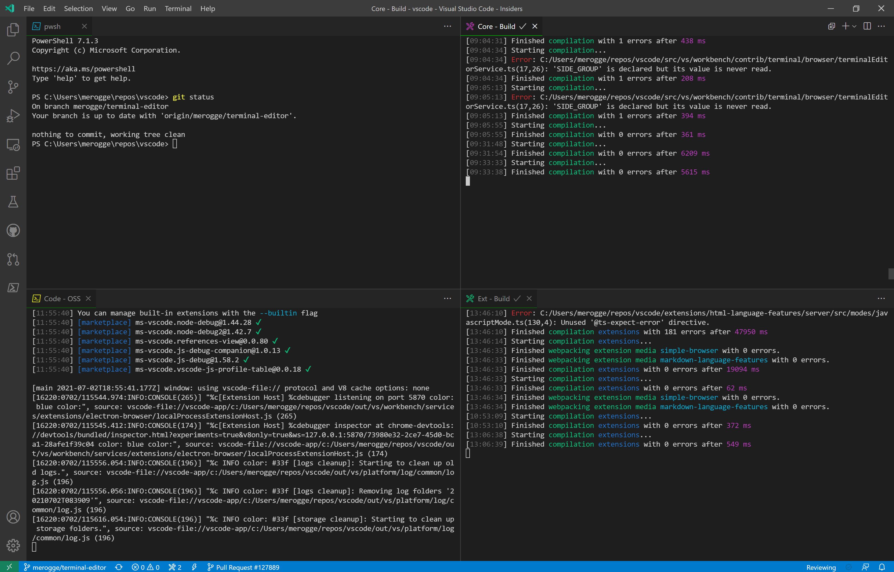
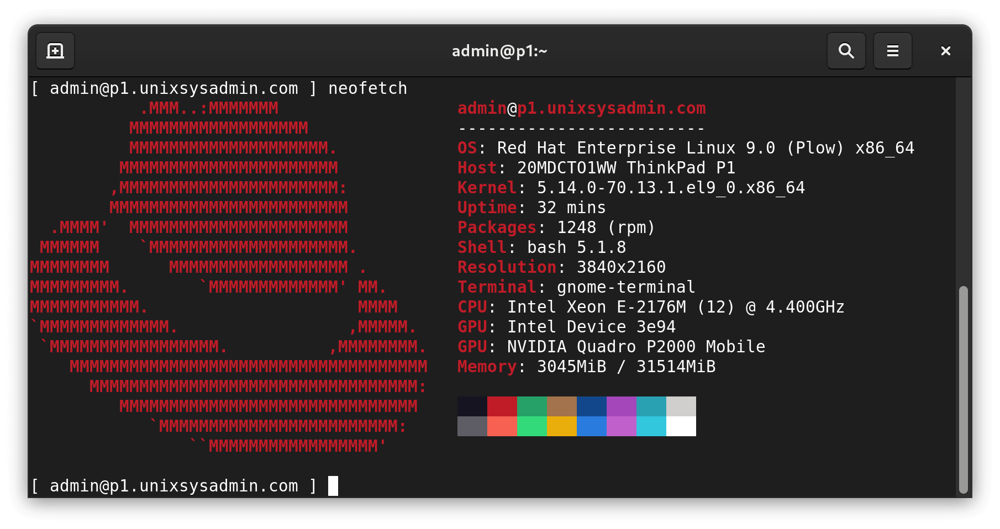

2. Adventures in the Command Line#
2.1. An Introduction to IDEs#
When most people start programming, they do it on an integrated development environment or IDE. An example of an IDE you may have used is VSCode, IntelliJ, Spyder. An IDE is a collection of software that integrates essential tools for software development into a unified interface. It usually includes things like a source code editor with features like syntax highlighting, local build automation tools for compiling, a terminal, and a debugger for identifying and fixing bugs in the code. By combining these functionalities within a single interface, IDEs make it really easy to develop code and build applications. You can run and build code with a button, you don’t need to think about compiling your code, and you can save code without having to use a version control system like Git (more on that later). But as the scale of development gets bigger, you might need more than an IDE.
And that’s where the command line comes in!
Here’s an example of an IDE, VSCode

Source: https://code.visualstudio.com/updates/v1_58
The command line, or terminal is a way to interact with your computer. It’s often called a command-line interface (CLI) or shell. Let’s go through a break
Text Interface: Unlike graphical user interfaces (GUIs), which use windows, icons, and menus, terminals operate purely through text input and output. Users can interact with the system by typing commands and reading text responses.
Shell: The shell is a program that interprets commands entered by the user and executes them. Popular shells include Bash (Bourne Again Shell), Zsh (Z Shell) which is used on more modern Macs (Mac used bash before macOS Catalina), and PowerShell which is used on Windows.
Commands: Users type commands into the terminal to perform various tasks such as navigating the file system, managing files, running programs, and configuring system settings.
File System Navigation: Users can navigate through directories and manipulate files using commands like
cd(change directory),ls(list directory contents),mkdir(make directory),rm(remove files or directories), etc. You don’t need to open up things manually with your command line, you can just navigate through typing - no need for your mouse! Many experienced programmers pride themselves on their ability to navigate their development environments without having to lift their fingers for aything but typing, increasing their programming efficiency.Scripting and Automation: Terminals are powerful for automation and scripting tasks. Users can write scripts (sequences of commands) to perform repetitive tasks, manage system configurations, or automate software deployment. You can customize your system, especially with operating systems like Linux, to make your computer system work for you!
Remote Access: Terminals are commonly used for remote access to servers and computers. Secure Shell (SSH) is a protocol that allows users to log in to a remote system securely via a terminal. This can also be useful when you want to access other code bases, (when we get into our git chapter, we can look at how to access other people’s code bases with ssh). This is important for the collaboration needed in large scale projects!
System Administration: System administrators frequently use terminals for managing servers and performing administrative tasks efficiently, especially in headless (no graphical interface) server environments.
Customization: Users can customize their terminal environment with different colors, fonts, and shortcuts to enhance usability and productivity. Or just make things pretty :wink:
Terminals provide a really flexible and powerful way to interact with a computer system, especially for tasks that require precise control, automation, and text-based interaction. So let’s go through some of the ways you can interact with your terminal!

Here’s a stylized version of a terminal
Source: https://www.unixsysadmin.com/rhel-9-resources/
2.1.1. Exercise#
First open up a terminal. This is done differently on different computer systems, but most have an app to access your terminal! Once you’re in your terminal, you can type ls to print out the files in your computer. The ls command stands for list, a way to list out everything in a folder, or directory. It’s important to understand, most of your computer is a file system of programs. The terminal helps you navigate that file system.
Let’s try an exercise in how to navigate using the command line:
First type mkdir project in your terminal and press enter. The mkdir command stands for make directory, so it creates a folder in which to hold your files.
But, the mkdir command doesn’t take you into the folder, it just creates one.
To enter the folder type cd project. The cd command takes you into the the directory you want to be working in, the command is short for change directory. It takes an argument of the folder you want to move into, so if you want to cd into a folder named ‘kittens’, you would write cd kittens.
To make sure we’re in the right directory, we can type pwd which stands for print working directory, which let’s you know what directory you’re working in.
Now let’s write some code! (This part only works if you have python on your computer)
First we’ll make a file to write our code in, to do this, type touch exercise.py. The touch command creates a new file.
Now to put some code in the file, try this command: echo "print('hello world')" >> exercise.py
Let’s break this whole command down, because it’s actually a combination of commands! The first is the echo command. The echo is a command similar to print, that allows users to display lines of text or strings that are passed as arguments. The command after this, what might look like arrows, are called redirection, which has to do with input and output, you can think of the double arrows as moving some data into the file
exercise.py. We’ll go over more of redirection later!
Our next step is to make it executable, so type chmod +x exercise.py. chmod stands for change mode, because every file on your computer has a set of actions users are allowed to do on that file. If someone is developing a tool, they would have very different permissions to someone who’s just trying to read the file, so these permissions can have very important security implications!
Now let’s execute some code!
Type out python something.py. The output ‘hello world’ should be on your terminal.
We were able to write and execute a whole program on just our terminal! But it was a pretty simple program- what if we wanted to write something much bigger? There are a lot of text editors that can integrate with the terminal, like emacs and vim! Even IDEs like VsCode are integrated within the terminal.
Let’s delete out work now.
Type out cd and then rmdir -r project. The rmdir -r, rmdir stands for remove directory, and the -r stands for recursive, because rmdir usually acts on empty dictionaries. The -r flag allows things to be recursively deleted. Similarly, rm deletes files.
2.2. Shell Command Basics#
ls
Usage:
ls [directory]Description: Lists directory contents
cd
Usage:
cd [directory]Description: Changes the current directory
pwd
Usage:
pwdDescription: Prints the current working directory
mkdir
Usage:
mkdir [directory_name]Description: Creates a new directory.
Example:
mkdir my_folder(creates a directory named “my_folder”).
rm
Usage:
rm [file(s)]Description: Removes (deletes) files or directories.
cp
Usage:
cp [source] [destination]Description: Copies files or directories.
Example:
cp file.txt new_location/(copies “file.txt” to “new_location/”),cp -r directory1 directory2(copies “directory1” and its contents recursively to “directory2”).
mv
Usage:
mv [source] [destination]Description: Moves (or renames) files or directories.
Example:
mv file.txt new_location/(moves “file.txt” to “new_location/”),mv old_name.txt new_name.txt(renames “old_name.txt” to “new_name.txt”)
touch
Usage:
touch [file(s)]Description: Creates an empty file or updates the timestamp of an existing file
echo
Usage:
echo [text]Description: Prints text or variables to the terminal
cat
Usage:
cat [file(s)]Description: Concatenates files and prints them to the standard output
Example:
cat file.txt(displays the contents of “file.txt” in the terminal)
These are some of the fundamental shell commands used in Unix-like systems. But there are many more for you to try out and explore. Understanding the file system and paths are super important in computing, so try playing around with commands! If you want some more information about commands, or you just forget what a command does, you can type man <command>. This will give you a manual page, hence it’s name the man pages. The man pages are a great way to learn about unix commands, and you don’t have to navigate out of the terminal to use them. We have a whole chapter on how to read them if you find them confusing- so check out how to use the man pages! The man pages can often give you information about the commands options, that tell you how alter the behavior of these commands, but for simplicity, they aren’t included here.
Another important concept to understand in the command line is redirection! Redirection commands allows you to manage input and output streams, which lets you to control where the input comes from and where the output goes. Here are some common redirection operators and their typical usages:
Standard Output (stdout) Redirection (
>)Usage:
command > output_fileDescription: Redirects the standard output of a command to a file. If the file already exists, it will be overwritten.
Example:
ls -l > listing.txt(redirects the output ofls -lcommand to a file namedlisting.txt)
Append Output (
>>)Usage:
command >> output_fileDescription: Appends the standard output of a command to a file. If the file does not exist, it will be created.
Example:
echo "Additional text" >> file.txt(appends “Additional text” tofile.txt)
Standard Input (stdin) Redirection (
<)Usage:
command < input_fileDescription: Redirects the standard input of a command from a file instead of the keyboard.
Example:
wc -l < file.txt(counts the number of lines infile.txt)
Pipe (
|)Usage:
command1 | command2Description: Redirects the output of
command1as input tocommand2.Example:
cat file.txt | grep "pattern"(usescatto outputfile.txtandgrepto search for “pattern” in the output)
Redirect Standard Error (
2>)Usage:
command 2> error_fileDescription: Redirects the standard error output of a command to a file.
Example:
ls -l /not_a_real_directory 2> error.log(redirects error output toerror.log)
These redirection operators are powerful tools for manipulating input and output streams in shell scripts and commands. They allow you to capture output, suppress output, and manage errors effectively.
Now that you have an overview of the how to use the commmand line, try it out yourself! Try exploring your file system, and navigating your computer by just typing some commands! If you need any help- remember, you can always check out the man pages.
Happy Exploring!